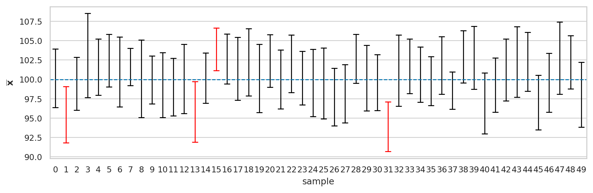

Section 3.2 — Confidence intervals
Contents
Section 3.2 — Confidence intervals#
This notebook contains the code examples from Section 3.2 Confidence intervals of the No Bullshit Guide to Statistics.
Notebook setup#
# load Python modules
import os
import numpy as np
import pandas as pd
import seaborn as sns
import matplotlib.pyplot as plt
# Plot helper functions
from plot_helpers import plot_pdf
from plot_helpers import savefigure
# Figures setup
sns.set_theme(
context="paper",
style="whitegrid",
palette="colorblind",
rc={'figure.figsize': (5,2)},
)
blue, orange = sns.color_palette()[0], sns.color_palette()[1]
DESTDIR = "figures/stats/confidence_intervals"
%config InlineBackend.figure_format = 'retina'
# set random seed for repeatability
np.random.seed(42)
#######################################################
\(\def\stderr#1{\mathbf{se}_{#1}}\) \(\def\stderrhat#1{\hat{\mathbf{se}}_{#1}}\) \(\newcommand{\Mean}{\textbf{Mean}}\) \(\newcommand{\Var}{\textbf{Var}}\) \(\newcommand{\Std}{\textbf{Std}}\) \(\newcommand{\Freq}{\textbf{Freq}}\) \(\newcommand{\RelFreq}{\textbf{RelFreq}}\) \(\newcommand{\DMeans}{\textbf{DMeans}}\) \(\newcommand{\Prop}{\textbf{Prop}}\) \(\newcommand{\DProps}{\textbf{DProps}}\)
(this cell contains the macro definitions like \(\stderr{\overline{\mathbf{x}}}\), \(\stderrhat{}\), \(\Mean\), …)
Definitions#
Estimators#
Recall all the estimators (functions that take samples as inputs) we defined in the previous section.
def mean(sample):
return sum(sample) / len(sample)
def var(sample):
xbar = mean(sample)
sumsqdevs = sum([(xi-xbar)**2 for xi in sample])
return sumsqdevs / (len(sample)-1)
def std(sample):
s2 = var(sample)
return np.sqrt(s2)
def dmeans(xsample, ysample):
dhat = mean(xsample) - mean(ysample)
return dhat
filename = os.path.join(DESTDIR, "confidence_intervals_mean_rvX_n20.pdf")
from scipy.stats import norm
from plot_helpers import gen_samples
import seaborn as sns
import matplotlib.pyplot as plt
import warnings
palette = sns.color_palette(palette=["#ff0000", "#000000"])
N = 50
n = 20
# Generate N=50 samples of size n=20 from a normal dist
rvX = norm(100,10)
np.random.seed(47)
samples_df = gen_samples(rvX, n=n, N=N)
samples_df.columns = range(0,N)
df2 = samples_df.melt(var_name="sample", value_name="n")
def confint(data):
"""
Compute 90% confidence interval.
Note: 1.729 = tdist(19).ppf(0.95)
"""
n = len(data)
mean = data.mean()
std = data.std(ddof=1)
se = std / np.sqrt(n)
return [mean - 1.729*se, mean + 1.729*se]
# Add new column to indicate if CI contains mean or not
for sidx in range(0,N):
sample = df2[df2["sample"]==sidx]["n"].values
C_L, C_U = confint(sample)
if C_L <= rvX.mean() and rvX.mean() <= C_U:
outcome = 1 # includes population mean
else:
outcome = 0 # doesn't include population mean
df2.loc[df2["sample"]==sidx,"success"] = outcome
with warnings.catch_warnings(), plt.rc_context({"figure.figsize":(9,3)}):
warnings.filterwarnings('ignore', category=UserWarning)
ax = sns.pointplot(x="sample", y="n", hue="success", data=df2,
errorbar=confint, palette=palette,
join=False, capsize=0.5, markers=" ", errwidth=1)
ax.set_ylabel("$\overline{\mathbf{x}}$")
ax.axhline(y=rvX.mean(), color='b', label='Mean', linestyle='--', linewidth=1)
ax.legend([],[], frameon=False)
savefigure(ax, filename)
Saved figure to figures/stats/confidence_intervals/confidence_intervals_mean_rvX_n20.pdf
Saved figure to figures/stats/confidence_intervals/confidence_intervals_mean_rvX_n20.png

Confidence interval constructions#
Bootstrap confidence intervals#
#######################################################
def bootstrap_stat(sample, statfunc, B=10000):
"""
Compute the sampling distribiton of `statfunc`
from `B` bootstrap samples generated from `sample`.
"""
n = len(sample)
bstats = []
for i in range(0, B):
bsample = np.random.choice(sample, n, replace=True)
bstat = statfunc(bsample)
bstats.append(bstat)
return bstats
Analytical approximations#
Confidence interval for the population mean#
Example 1: confidence interval for the mean apple weight#
apples = pd.read_csv("../datasets/apples.csv")
asample = apples["weight"]
# asample
n = asample.count()
amean = mean(asample)
astd = std(asample)
sehat = astd / np.sqrt(n)
from scipy.stats import t as tdist
rvT = tdist(n-1)
t_05 = abs(rvT.ppf(0.05))
t_95 = abs(rvT.ppf(0.95))
CI_mu_tdist = [amean - t_05*sehat, amean + t_95*sehat]
CI_mu_tdist
[196.82986523723363, 208.37013476276636]
# ALT2. setting `loc` and `scale` parameters on the T-distribution
rvTAbar = tdist(n-1, loc=amean, scale=sehat)
rvTAbar.ppf(0.05), rvTAbar.ppf(0.95)
(196.82986523723363, 208.37013476276636)
# ALT1. use the scipy.stats function
from scipy.stats import t as tdist
tdist.interval(0.9, df=n-1, loc=amean, scale=sehat)
(196.82986523723363, 208.37013476276636)
# ALT2. use the statsmodels function
import statsmodels.stats.api as sms
sms.DescrStatsW(asample).tconfint_mean(alpha=0.1)
(196.82986523723363, 208.37013476276636)
Bootstrap confidence interval for the mean#
np.random.seed(48)
ameans_boot = bootstrap_stat(asample, statfunc=mean)
CI_mu_boot = [np.percentile(ameans_boot,5),
np.percentile(ameans_boot,95)]
CI_mu_boot
[197.1, 208.20166666666663]
Confidence interval for the population variance#
Example 2: confidence interval for the variance of apple weights#
n = 30
s2 = var(asample)
from scipy.stats import chi2
rvX2 = chi2(n-1)
x2_05 = rvX2.ppf(0.05)
x2_95 = rvX2.ppf(0.95)
CI_sigma2 = [(n-1)*s2/x2_95, (n-1)*s2/x2_05]
CI_sigma2
[235.7592779198888, 566.5796548600426]
Bootstrap confidence interval for the variance#
np.random.seed(51)
avars_boot = bootstrap_stat(asample, statfunc=var)
CI_sigma2_boot = [np.percentile(avars_boot,5),
np.percentile(avars_boot,95)]
CI_sigma2_boot
[199.33379310344824, 484.7354022988503]
Confidence interval for the difference between means#
def calcdf(stdX, n, stdY, m):
vX = stdX**2 / n
vY = stdY**2 / m
df = (vX + vY)**2 / (vX**2/(n-1) + vY**2/(m-1))
return df
def pooled_var(sampleX, sampleY):
...
Example 3: confidence interval for difference in electricity prices#
eprices = pd.read_csv("../datasets/eprices.csv")
pricesW = eprices[eprices["end"]=="West"]["price"]
pricesE = eprices[eprices["end"]=="East"]["price"]
# sample size and std in East
nW = pricesW.count()
stdW = pricesW.std()
# sample size and std in West
nE = pricesE.count()
stdE = pricesE.std()
# standard error
seD = np.sqrt(stdW**2/nW + stdE**2/nE)
# seD
# degrees of freedom
df = calcdf(stdW, nW, stdE, nE)
# center of the CI
dhat = dmeans(pricesW, pricesE)
# dhat
from scipy.stats import t as tdist
rvT = tdist(df)
t_05 = abs(rvT.ppf(0.05))
t_95 = abs(rvT.ppf(0.95))
CI_Dprices_tdist = [dhat - t_05*seD, dhat + t_95*seD]
CI_Dprices_tdist
[1.9396575883681457, 4.060342411631854]
# Or use a t dist with loc and scale parameters:
rvD = tdist(df, loc=dhat, scale=seD)
rvD.ppf(0.05), rvD.ppf(0.95) # == rvD.interval(0.9)
(1.9396575883681457, 4.060342411631854)
# ALT1. using statsmodels
import numpy as np, statsmodels.stats.api as sms
cm = sms.CompareMeans(sms.DescrStatsW(pricesW), sms.DescrStatsW(pricesE))
cm.tconfint_diff(alpha=0.1, usevar='unequal')
(1.9396575883681464, 4.060342411631853)
# ALT2. using pingouin
import pingouin as pg
res = pg.ttest(pricesW, pricesE, confidence=0.9, correction=True)
res["CI90%"].values[0]
array([1.93965759, 4.06034241])
Bootstrap confidence interval#
# compute bootstrap estimates for mean in each group
meanW_boot = bootstrap_stat(pricesW, statfunc=mean)
meanE_boot = bootstrap_stat(pricesE, statfunc=mean)
# compute the difference between means from bootstrap samples
dmeans_boot = []
for bmeanW, bmeanE in zip(meanW_boot, meanE_boot):
d_boot = bmeanW - bmeanE
dmeans_boot.append(d_boot)
CI_Dprices_boot = [np.percentile(dmeans_boot,5),
np.percentile(dmeans_boot,95)]
CI_Dprices_boot
[2.1000000000000014, 3.9333333333333336]
Example 4: confidence interval for the difference in sleep scores#
doctors = pd.read_csv("../datasets/doctors.csv")
scoresU = doctors[doctors["location"]=="urban"]["score"]
scoresR = doctors[doctors["location"]=="rural"]["score"]
# estimate (center of the CI)
dhat = dmeans(scoresR, scoresU)
dhat
# sample size and std for urban group
nU = scoresU.count()
stdU = scoresU.std()
# sample size and std for rural group
nR = scoresR.count()
stdR = scoresR.std()
# standard error
seD = np.sqrt(stdU**2/nU + stdR**2/nR)
# degrees of freedom
df = calcdf(stdU, nU, stdR, nR)
from scipy.stats import t as tdist
rvT = tdist(df)
t_05 = abs(rvT.ppf(0.05))
t_95 = abs(rvT.ppf(0.95))
CI_Dscores_tdist = [dhat - t_05*seD, dhat + t_95*seD]
CI_Dscores_tdist
[0.768077404177574, 3.679132248914442]
# Or use a t dist with loc and scale parameters:
rvD = tdist(df, loc=dhat, scale=seD)
rvD.ppf(0.05), rvD.ppf(0.95)
(0.768077404177574, 3.679132248914442)
Bootstrap confidence interval#
# compute bootstrap estimates for mean in each group
meansU_boot = bootstrap_stat(scoresU, statfunc=mean)
meansR_boot = bootstrap_stat(scoresR, statfunc=mean)
# compute the difference between means in bootstrap samples
dmeans_boot = []
for bmeanR, bmeanU in zip(meansU_boot, meansR_boot):
d_boot = bmeanR - bmeanU
dmeans_boot.append(d_boot)
CI_Dscores_boot = [np.percentile(dmeans_boot,5),
np.percentile(dmeans_boot,95)]
CI_Dscores_boot
[-3.6598981900452414, -0.8212669683257872]
Explanations#
Discussion#
Comparing analytical formulas and bootstrap estimates#
Alternative bootstrap estimators#
Mention more advanced bootstrap methods like BCa exist (–> see problem PZZ)
CUT MATERIAL#
# simulation based sampling distributoin
def gen_sampling_dist(rv, statfunc, n, N=10000):
stats = []
for i in range(0, N):
sample = rv.rvs(n)
stat = statfunc(sample)
stats.append(stat)
return stats
from scipy.stats import norm
muK = 1000
sigmaK = 10
rvK = norm(muK, sigmaK)
kombucha = pd.read_csv("../datasets/kombucha.csv")
batch02 = kombucha[kombucha["batch"]==2]
ksample02 = batch02["volume"]
ksample02.values
array([ 995.83, 999.44, 978.64, 1016.4 , 982.07, 991.58, 1005.03,
987.55, 989.42, 990.91, 1005.51, 1022.92, 1000.42, 988.82,
1005.39, 994.04, 999.81, 1011.75, 992.52, 1000.09])
# n = 20
# xbar = mean(ksample02)
# xstd = std(ksample02)
# sehat = xstd / np.sqrt(n)
# from scipy.stats import t as tdist
# rvT = tdist(n-1)
# t_05 = abs(rvT.ppf(0.05))
# t_95 = abs(rvT.ppf(0.95))
# CI_mu_tdist = [xbar - t_05*sehat, xbar + t_95*sehat]
# CI_mu_tdist
# # true sampling distribuiton (simulation)
# kbars = gen_sampling_dist(rvK, statfunc=mean, n=20)
# [np.percentile(kbars,5),
# np.percentile(kbars,95)]
# variance
n = 20
s2 = var(ksample02)
from scipy.stats import chi2
rvX2 = chi2(n-1)
x2_05 = rvX2.ppf(0.05)
x2_95 = rvX2.ppf(0.95)
CI_sigma2_tdist = [(n-1)*s2/x2_95, (n-1)*s2/x2_05]
CI_sigma2_tdist
[78.35958956911868, 233.47152020964367]
np.random.seed(48)
kvars_boot = bootstrap_stat(ksample02, statfunc=var)
CI_sigma2_boot = [np.percentile(kvars_boot,5),
np.percentile(kvars_boot,95)]
CI_sigma2_boot
[61.42017901315756, 181.44746289473633]
# true
kvars = gen_sampling_dist(rvK, statfunc=var, n=20)
[np.percentile(kvars,5),
np.percentile(kvars,95)]
[52.62431855846445, 160.48062854014054]